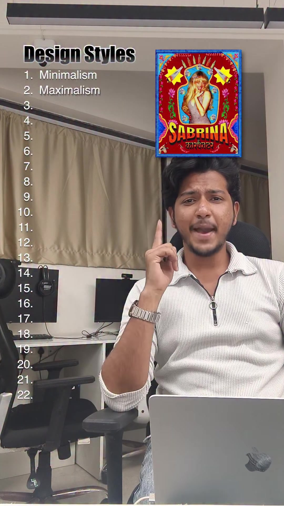
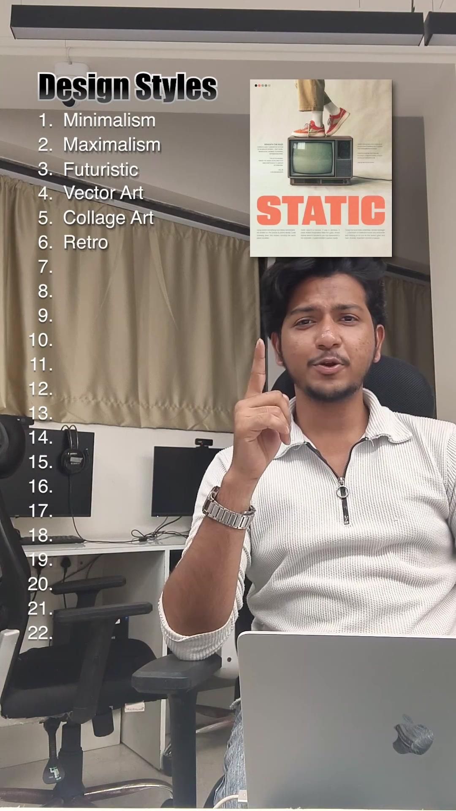
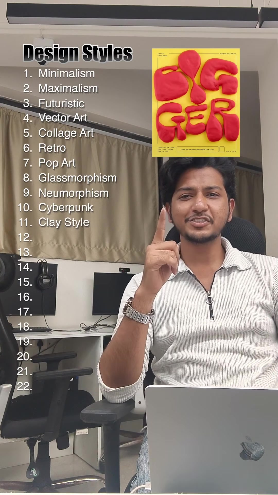
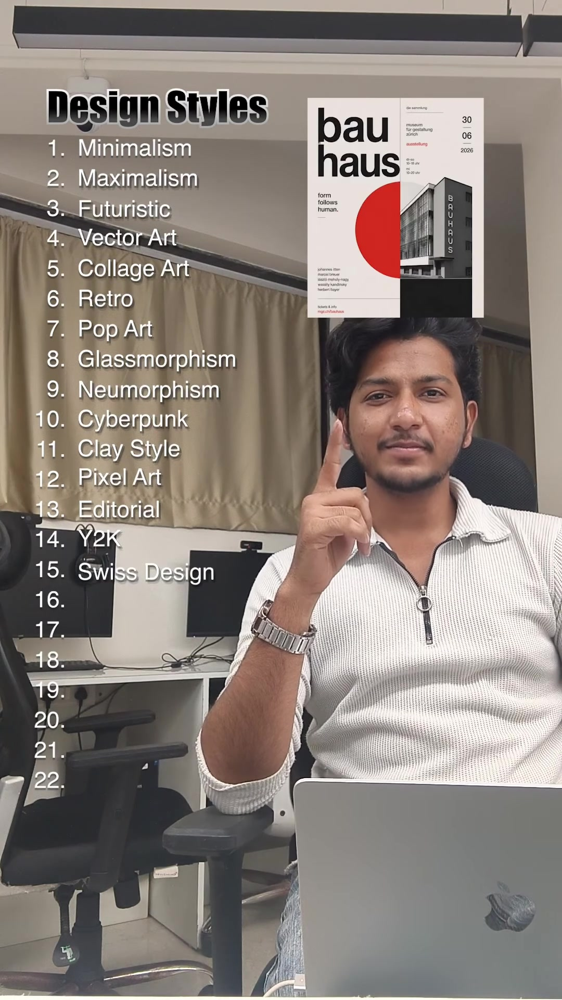
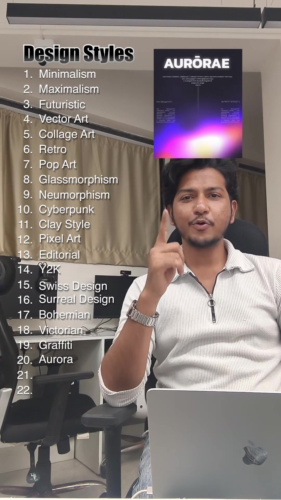
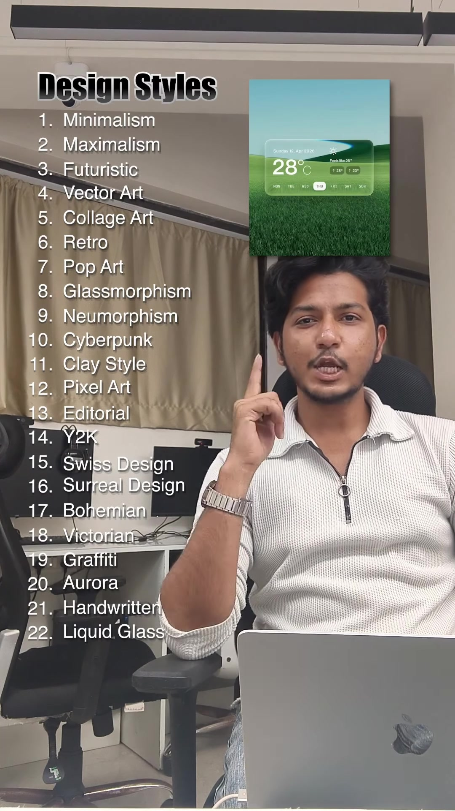

Design · Visual-Styles
The 22 Visual Design Styles: Complete Taxonomy & Creative Direction Guide
Design teams and vibe-coders often suffer from generic UI aesthetic defaultism (e.g. standard Tailwind gray boxes or generic neon gradients). Having an exact vocabulary for aesthetic genres unlocks precise prompt engineering, brand identity differentiation, and moodboard direction. This guide documents the 22 fundamental visual design styles showcased by Muzammil Ansari, providing key aesthetic signatures, typical color theories, and ideal product applications for each.
Visual Reference Stills






The 22 Visual Design Styles Catalog
Minimalism
Extreme negative space, functional hierarchy, deliberate restraint, and monochrome or dual-tone palettes.
Maximalism
Sensory richness, explosive color clash, intricate patterning, overlapping layers, and joyful visual abundance.
Futuristic / Sci-Fi
Holographic overlays, high-contrast cyan/purple neon accents, HUD wireframes, and dark high-tech surfaces.
Vector Art
Clean geometric bezier curves, flat or subtle gradient shading, crisp SVG scalability, and iconic character design.
Collage Art
Torn paper textures, mixed-media archival photography, newspaper typography cutouts, and vintage surreal juxtapositions.
Retro Art
Mid-century warmth (1950s–1970s), warm sepia/mustard tones, halftone print textures, and distressed analog grain.
Pop Art
Bold black ink contours, Ben-Day dots, Warhol/Lichtenstein comic style, high saturation primary colors, and ironic commercialism.
Glassmorphism
Frosted translucent backgrounds (backdrop-filter: blur()), multi-layered spatial depth, and subtle glowing border highlights.
Neumorphism
Soft extruded plastic look created via dual opposing soft drop/inner shadows on an identical background color.
Cyberpunk
Gritty dark alleys, neon magenta/cyan kanji signage, scanlines, glitch chromatic aberrations, and industrial tech dystopia.
Claymorphism
Friendly 3D matte plasticine/clay objects, rounded pillowy radiuses, pastel colors, and playful inflated dimensions.
Pixel Art
Strict grid-aligned 8-bit/16-bit raster nostalgia, indexed color palettes, and retro arcade aesthetic.
Editorial Design
Serif-heavy typography, sophisticated asymmetrical multi-column editorial grids, high-fashion photography, and cultural gravitas.
Y2K Aesthetic
Late 90s/early 2000s cyber-optimism, chrome 3D bevels, blob typography, translucent iMac colors, and starburst badges.
Swiss Style (International Typographic)
Rigid mathematical modular grids, asymmetrical flush-left typography, bold sans-serifs (Helvetica), and pure functional clarity.
Surreal Design
Dreamlike impossible physics, floating monolithic objects, Salvador Dalí spatial distortions, and psychological symbolism.
Bohemian (Boho)
Organic earthy tones (terracotta, sage, sand), botanical linework, hand-drawn motifs, and relaxed natural textures.
Victorian
Intricate ornamental filigree, engraved vintage botanical woodcuts, ornate borders, and antiquarian heraldry.
Graffiti / Street Art
Spray-paint splatters, stencil typography, raw concrete textures, marker tags, and defiant urban energy.
Aurora UI
Fluid ethereal multi-point mesh gradients, northern lights luminescence, and smooth continuous color blending.
Handwritten / Scribble
Authentic raw ink scribbles, informal human annotations, doodle arrows, and warm approachable vulnerability.
Liquid Glass
Hyper-fluid distorted optical refraction, chrome water reflections, viscous glossy blobs, and dynamic light bending.